My academics page might seem a little sparce, however I do make up for it in non-academic related participations. I am generally
someone who likes to take the lead, so quite a number of the events I have signed up for or participated in were leadership related. To see a summarised list of
my participations, click here
As the President and a Co-Section Leader, I certainly have learnt a lot from my time in the choir. I have learnt about music theory and the nuances behind composing
musical pieces. I've also learnt how to appreciate music in multiple forms, and feel more cultured and well rounded.
Aside from the music related aspects, I have definitely grown a lot as both a leader and a person. Firstly, having to manage a team that was not as
motivated as me was definitely a new challenge for me since the teams I worked with in the past were much more driven. While I did not successfully manage to instil
a proper sense of motivation to them no matter how hard I tried, I definitely did learn a lot more about the importance of encouraging the heart for others, and
how much the people you work with can make or break the team. Secondly, I have definitely learnt how to be more patient and people and how to deal with certain
personality types, after working closely with the IP (secondary school-level wing of TJ) choir where the members are understandably less mature.
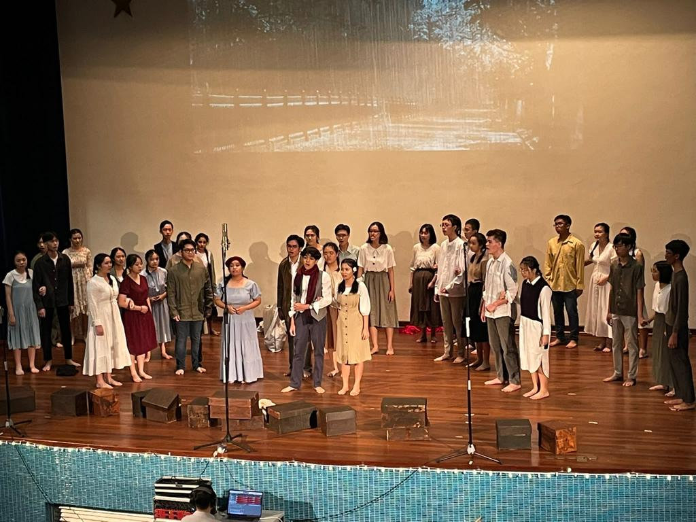
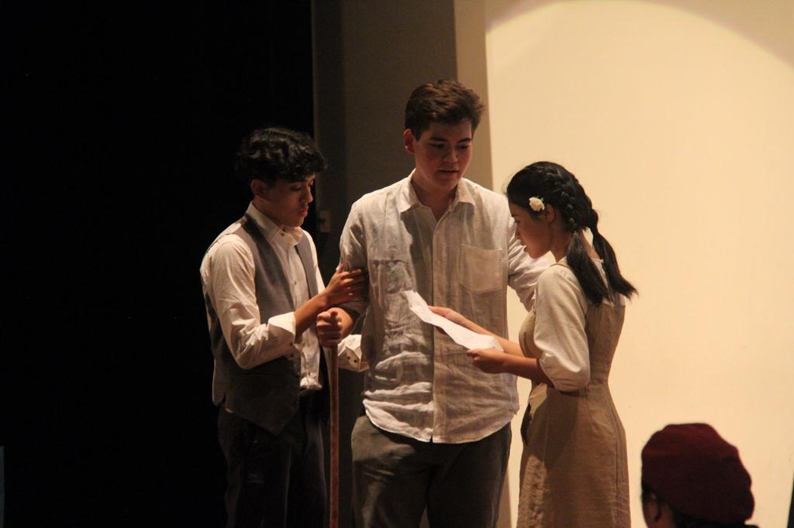
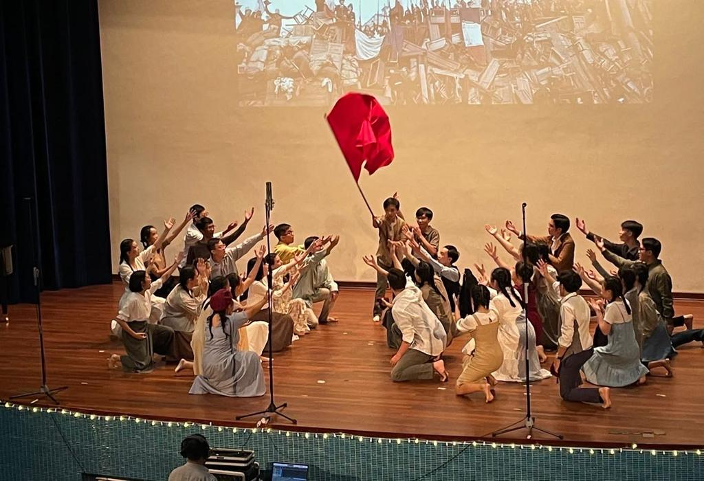
As for the events that we planned, we hosted choir exchanges with Ngee Ann Secondary and Anglican High School (where we also had a concert), as well as with the
Anderson-Serangoon JC and Tampines Meridian JC Choirs on a separate occasion. We also had a choir camp at the end of 2022 with the IP choir as well, where we bonded
and built up a lot of music theory. We were also invited to perform at the Esplanade Concert Hall for Limelight, a prestegious event where top school choirs and
bands would be invited to host their own concert in the Esplanade Concert Hall, which required a lot of planning on our end for publicity, administrative work and
performance related aspects such as choreography.
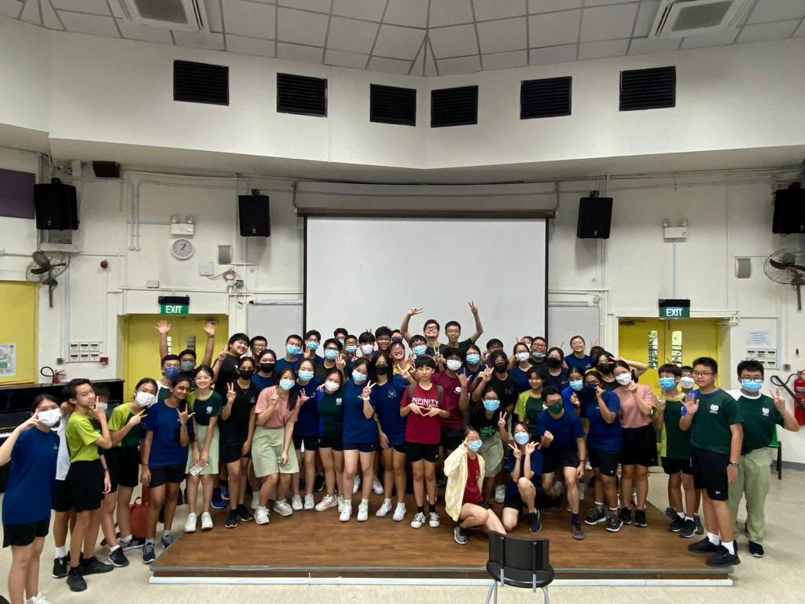
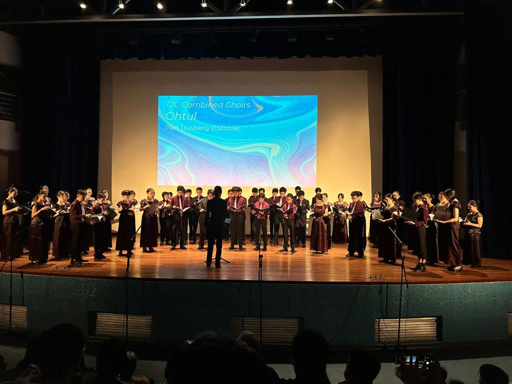
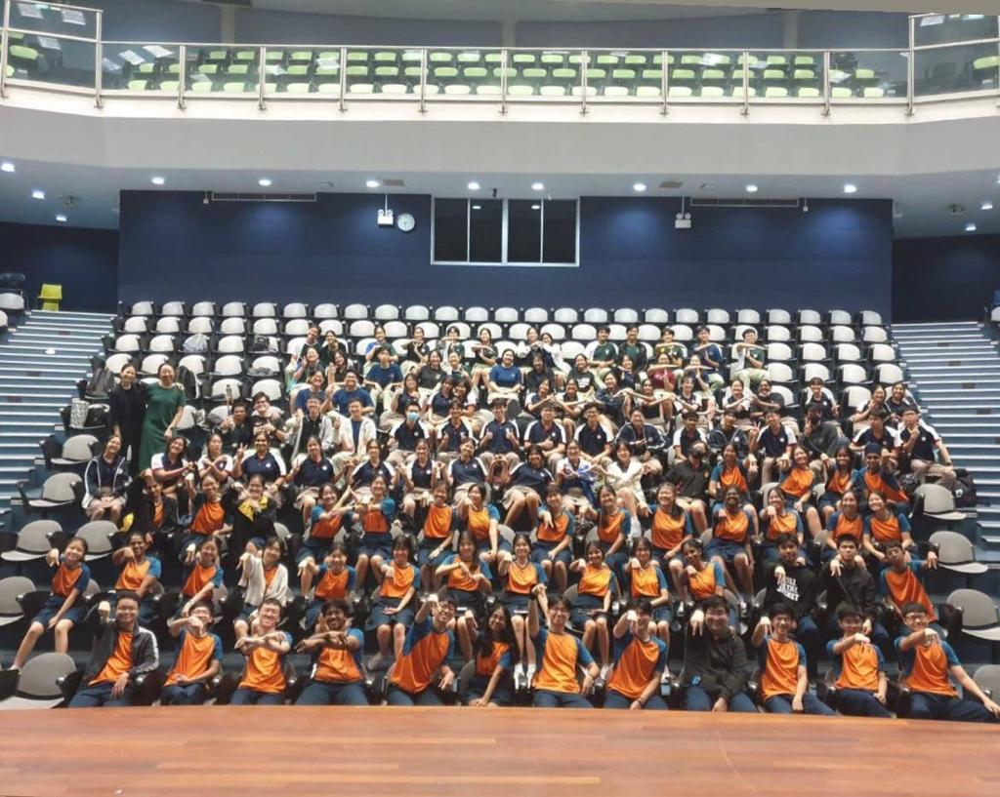
The DEFY Camp O'COMM, or organising committee was in charge of planning a camp for J1 students at the end of the J1 year, as well as a
VIA activity the following year. During the camp, we tried to inculcate leadership skills and allow campers to forge new friendships with their cohortmates, and
have fun, of course. During the 25km nightwalk, we managed to raise $6500 for the President's Challenge, along with over 40,000 bowls of rice or oats, in partnership with NTUC. As for our VIA
activity, we held a carnival for low-income elderly folk in the Bedok South area which was graced by our Deputy Prime Minister Heng Swee Keat, and distributed the
rice and oats raised during the night walk.
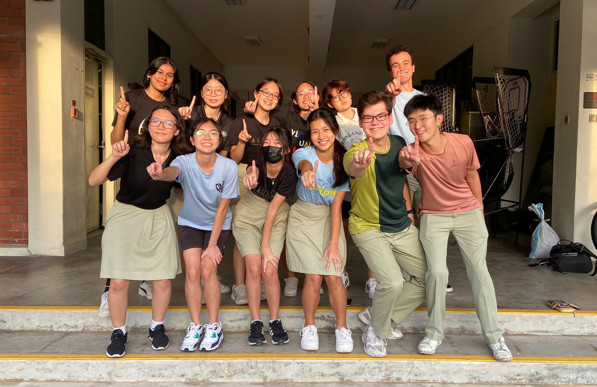
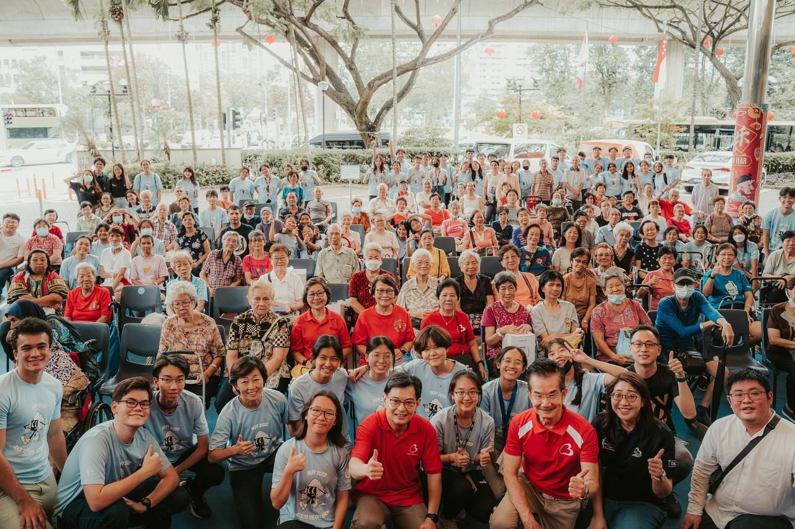
Through this process, I have definitely learnt much more about the administrative and logistical side of planning events, given that we had to source for and contact
logistics and vendors for different activities in the camp. It was also imperative for us to practice good communication, as we had to ensure that each sub-committee
was well aware and familiar with what the other sub-committee was doing. While it was definitely very taxing both mentally and physically, I definitely felt a sense
of fulfillment upon watching our ideas come to life, and knowing that what we were doing was for a good cause.
Temasek Development Programme (TDP), which is a programme aimed to provide more academically inclined students more opportunities to participate in competitions,
events and talks to build their leadership skills or broaden their horizons, along with sharing scholarship opportunities with them. The TDP also encourages
students to perform a lot of self reflection, so as to inculcate the habit of constantly trying to improve on oneself, and make our mark after we graduate.
Temasek Internship Programme
The TIP is a prestegious internship programme, where only students with strong academics a keen interest in their chosen industry can stand a chance of passing
being the interview and being selected. I was one of the lucky few students that passed and was selected to have the opportunity to intern at a digital marketing
firm, Design Prodidgy, under the TJC Alumni's President, Mr Marc Goh! Mr Marc was such a great mentor, and was like a treasure trove of knowledge with all of his
experiences. He also took time out of his busy schedule to show us around the area and tell us more about working in the heart of the CBD.

Us interns did research on business-to-business marketing, and had to try to develop a solution to make it cheaper through the use of AI. We were lucky, as Chat-GPT
had actually been released barely a week before our internship started, so we had the opportunity to test it out before it started being covered by the mainstream
media. We also tried using art generators such as Closerscopy, Dall-E and MidJourney! You can read the blog us interns came up with
here!
I am really grateful to have been given this opportunity, as I was given the rare chance to experience a 9-5 job in the heart of the CBD while still being a student.
I thoroughly enjoyed the experience and become good friends with the other interns that were there too! I had also learnt lots of important values, such as
responsibility, resilience and discipline, given that our job was really very self directed, and we were expected to be able to prepare a presentation for our
mentor by the end of each day. It got quite challenging at times given how we were working with some very new and upcoming technology which we were not very well
versed in, but I am proud to say that we did eventually manage to complete our assigned project.
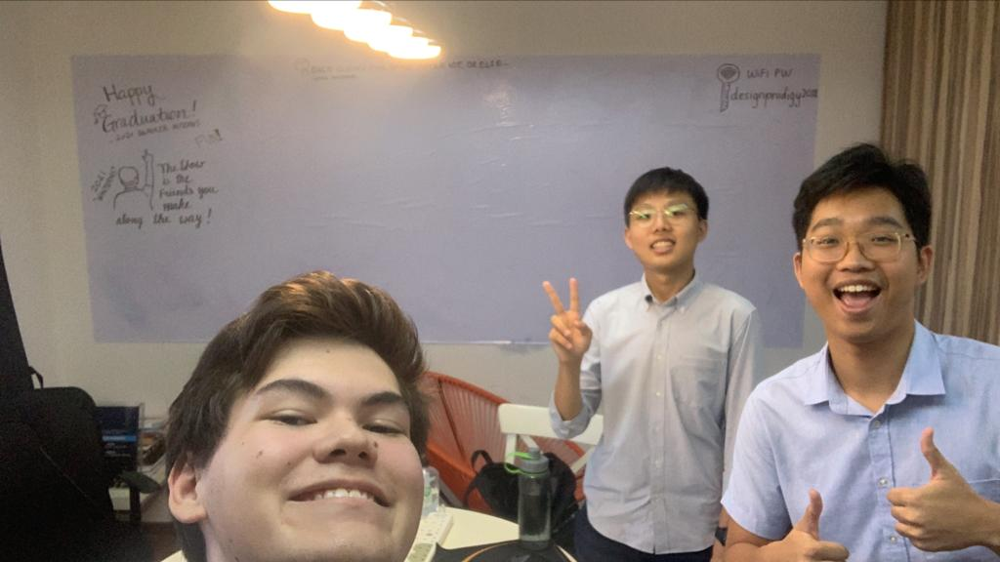
Alumni Mentorship Programme
The Alumni Mentorship Programme(AMP) was an opportunity provided to me by the TDP, where applicants got matched with an TJC alumnus who worked in an industry that
the applicant was interested in, so as to impart knowledge of their journeys to their positions, as well as to allow applicants to do some introspection on their
school life in TJ, be it in external competitions or in our leadership.
I was tagged to Ms Tian Gan, who works with UBS as a data analyst, due to my interest in the field of finance and IT, given that she did take
on an IT undergraduate degree and is working with a bank. She has a lot of knowledge to impart, and I always enjoy the sessions I have with her, and have definitely
learnt a lot of valuable skills and life lessons from her.
I was selected to be an OGL, after having to submit a rigorous application form and being cleared by all of my subject tutors. It was a delightful experience to
have been able to welcome in a new batch of J1s into the school and provide them with a sense of school spirit.
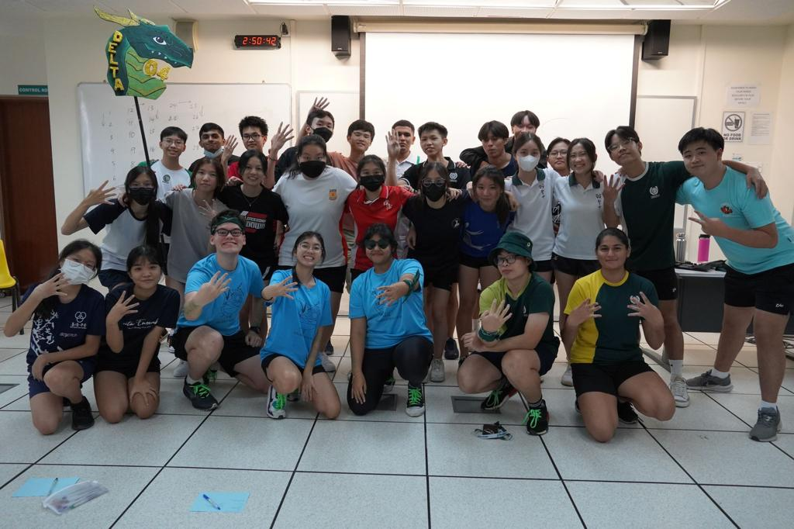
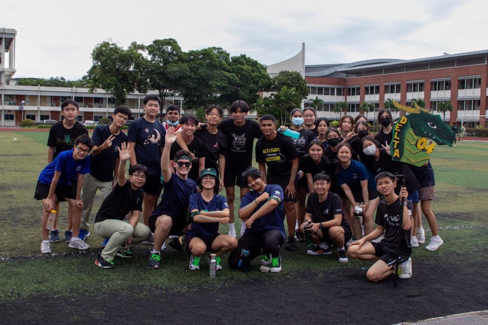
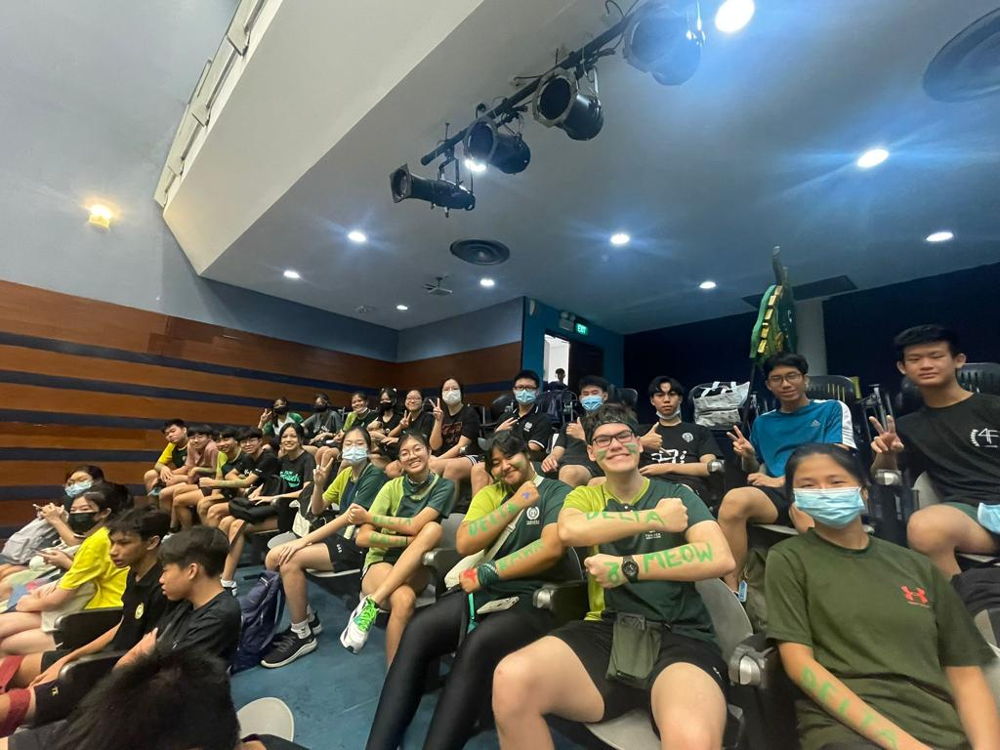
Aside from having to look after my group's wellbeing, I also acted as a pillar of support for them, shared my school experiences and advice to them, and ensured
that everyone was getting to know one another while having fun. I made lots of new friends during the orientation, among both my cohort mates and the J1s.
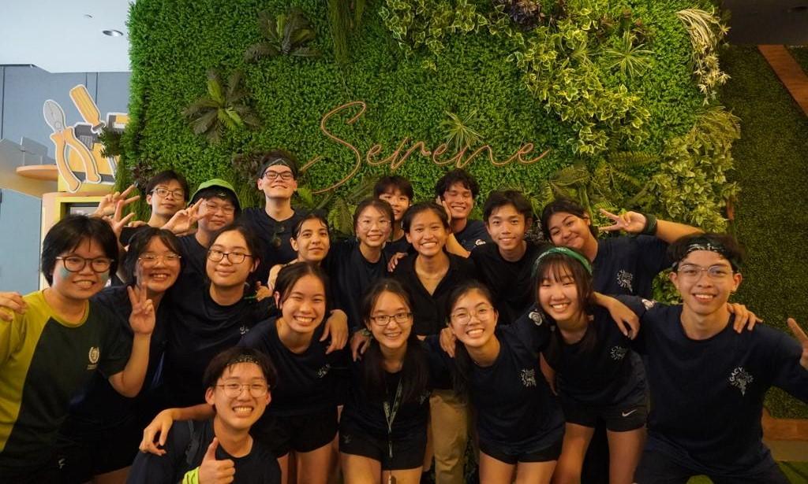
National Economics and Financial Management Challenge
NEFMC is an annual competition targeted at pre-tertiary institutions, by the NUS Economics Society. It is an annual challenge, consisting of 3 stages, firstly a
video on an economic issue, followed by a game-based round and lastly a case presentation.
For my team, our problem statement was regarding climate change from overfishing and overmining. Unfortunately, we did not make it past the first round, however it was
certainly a very enriching experience! If you are interested, you can view the video here
The annual SLC is a camp made for all JC1 student leaders, including cca leaders and class chairpersons. I had the opportunity to be a group facilitator, from which
I learnt very much given that everyone in the group was a leader, who all had their own ideas and leadership styles, so It was a great way for me to learn how
with a diverse group of people that are on par with each other in terms of ability. It was also an excellent opportunity for the student leaders to network anf get
to know other leaders in theit cohort, to allow for inter-cca activities.
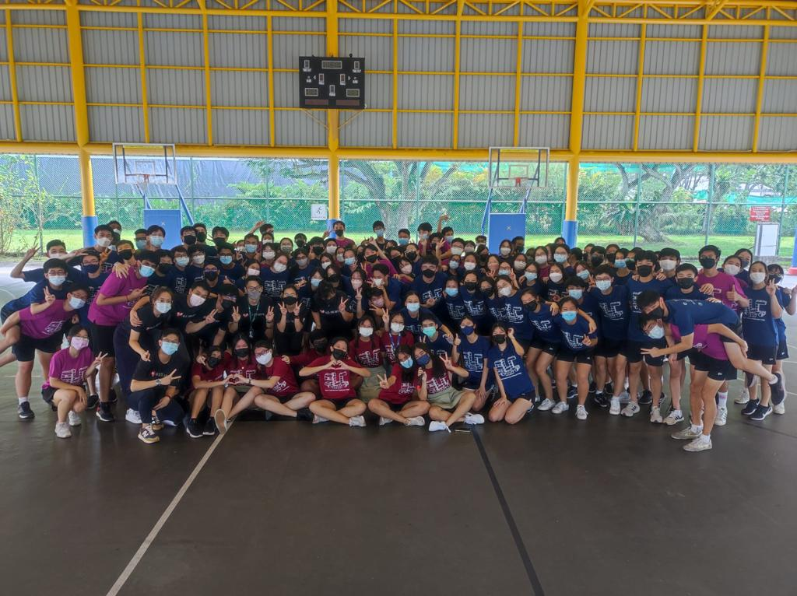
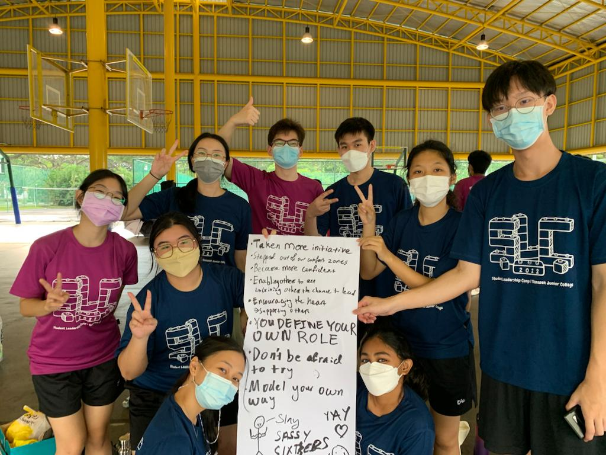
Temasek Distingushed Speakers Series
The TDSS is an annual event that covers different topics from socio-individual, economic and geopolitical angles. I had the opportunity to facilitate discussions
regarding the crypto world and listen to talks from distinguished alumni. It was certainly daunting for me, as I had close to no prior knowledge regarding the
crypto world, however after the primer lessons given to us, along witb our own research, I am proud to say that my group managed to have very insightful
discussions. I also learnt a fair bit from the guest speaker, Professor Inderjit Singh, a serial entrepreneur and former MP.
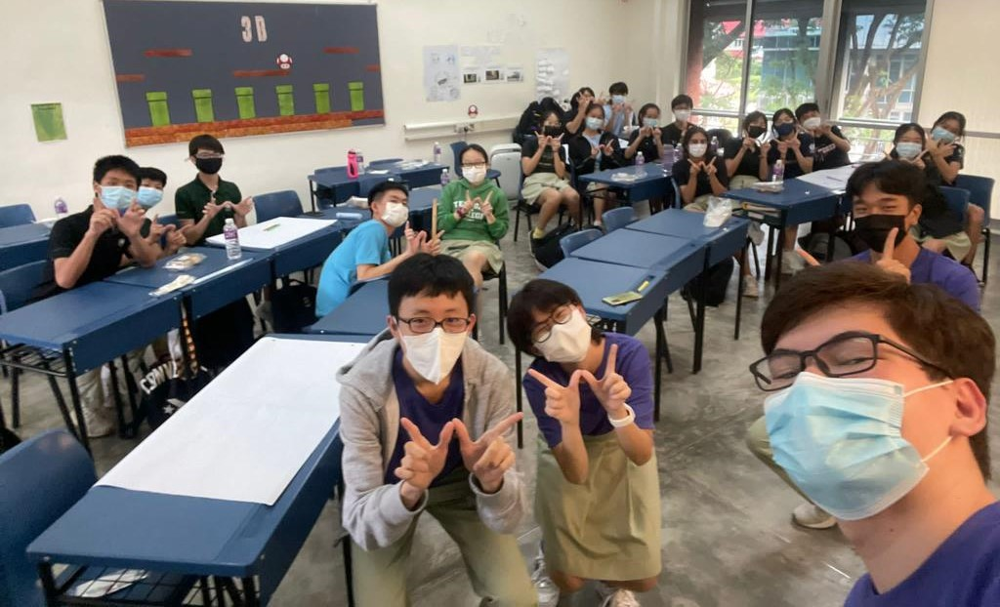
Temasek Leadership Showdown
The TLS was where I facilitated a group of primary and secondary schoolers during an event which aims to hone leadership qualities into budding student leaders, as well as
allow them to network with like-minded individuals. It certainly was very fulfilling, since I was able to inspire a new generation of leaders to be the best that
they could be.
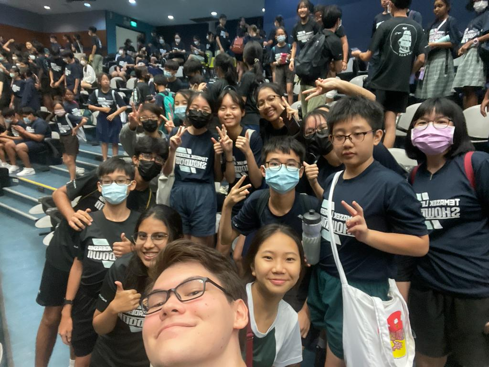
Student Leaders' Camp 2023
BuildingBloCS June Conference 2023
- Choir: President and Co-Section Leader
- DEFY Camp: Member of the organising committee
- Class Committee: Peer Support Leader
- Talent Development Programme: Member
- Temasek Internship Programme: Interned at Design Prodigy
- Alumni Mentorship Programme: Participant
- Orientation 2023: Orientation Group Leader
- National Economics and Financial Management Challenge 2023: Contestant and Team Leader
- Student Leaders' Camp 2022: Facilitator
- Student Leaders' Camp 2023: Facilitator
- Temasek Distingushed Speakers Series: Facilitator
- Temasek Leadership Showdown: Facilitator
- International Leadership Congress 2022: Participant
- International Leadership Congress 2023: Participant
- BuildingBloCS June Conference 2023: Participant, recipient of the 'Unique Project Award' from Better.sg
- Singapore Physics League 2023: Participant, Bronze award